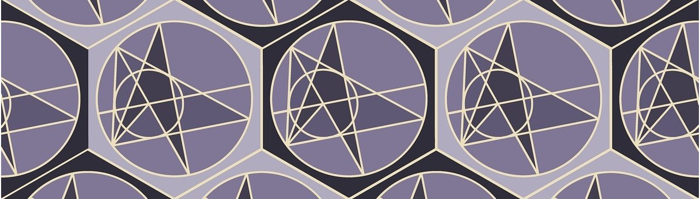
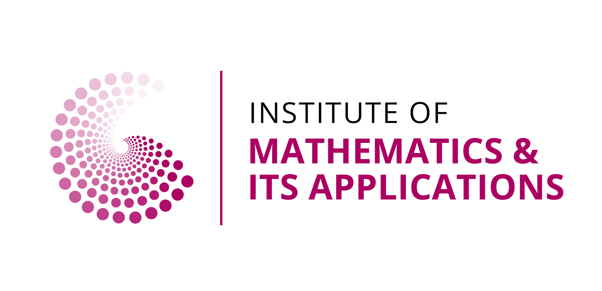

On the 9th December 2026, 3-6pm, the UCL Undergraduate Mathematics Colloquium and the UCL Maths Society will be hosting an Undergraduate Mathematics Poster Competition, inviting the best academic undergraduate posters from Universities across London and beyond to a poster session. Showcase your research, meet fellow maths undergrads, and compete for hundreds of pounds in prizes!
Submit poster title and abstract: https://forms.cloud.microsoft/e/TLEMC1gC6n
General admission: https://forms.cloud.microsoft/e/NYx73MDDaR
We have a fixed venue capacity, so registrations will close either when all spots are filled or on Wednesday 25th November 2026 at 6pm, whichever is sooner! We therefore encourage you to register sooner rather than later to secure your place.
Bio: Bestselling popular science and mathematics author, journalist and TV producer. His books include 'Fermat's Last Theorem', 'The Code Book: A history of codes and codebreaking', 'Big Bang', 'Trick of Treatment?' and 'The Simpsons and Their Mathematical Secrets'.
Present your poster to your fellow peers and the judges, browse other student posters, connect with undergrads from other universities and access exclusive networking with our academic and industry sponsors. Join us for the prize ceremony at the end of the poster session!
There can be a maximum of 5 competition entries from each University. We will let you know that your application has been successful by 27th November at the latest.
Format: A0 or A1 size, portait/landscape orientation
If you don't have access to an A1 or A0 printing service, you can also make a poster by attaching A4 or A3 sheets together.
Legibility: Aim for the title text to be readable from 2 meters away (min. 72pt)
Templates: Your University will likely have templates available. (For example, https://www.ucl.ac.uk/creative-services/printing/downloadable-poster-templates.)
Submissions will be evaluated by distinguished mathematics faculty from host and participating universities, alongside representatives from our academic partner organizations.
The event will take place on Bloomsbury Campus, UCL, London. More Information will be sent out to those who register. The nearest tube stations are Euston Square, Euston, Russell Square, Kings Cross.
Both locations used during the event are wheelchair accessible. If there are any other considerations that you would like us to be aware of, please indicate on the Registration/General Admission Form or contact us via email.
Q: Do I need to print my own poster?
A: Yes, your University mathematics department should assist you with printing your poster.
Q: Is there an entrance fee?
A: No, entering the competition and attending the keynote talk is completely free.
Q: If I submit a poster, do I need to sign up for General Admission too?
A: If you submit a poster, you are automatically registered as an attendee! You do not need to fill out the general attendance form separately.
Q: Why do I need to submit a digital copy of the poster?
A: This is to double check that the poster is suitable for the poster session and to assist judges in their decisions. The poster will not be shared online without your permission and our copy of the poster will be deleted a few weeks after the event.
Q: How many posters will there be from each University?
A: The maximum number of posters from each University is 5.
Q: Where will I receive information about the event?
A: After you fill out the registration/general admission form, we will contact you via the University email that you indicated on the form. Please make sure that you input this email address correctly.
More general information and advertising will appear on the UCL Maths Society (ADM) Instagram and the UCL Undergraduate Mathematics Colloquium instagram.
Please get in touch with any questions via email at uclugmathcol@gmail.com.
UCL Undergraduate Mathematics Colloquium social media platforms: YouTube, Instagram.
UCL Maths Society Instagram.
Lead Organiser: Tatiana Kurlina
Organising Committee:
